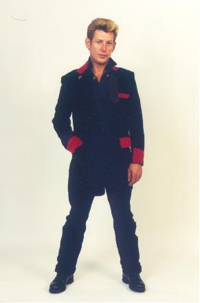
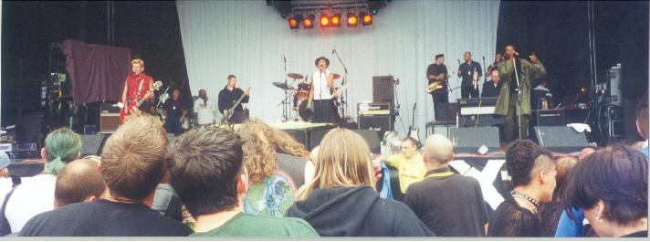

1998 To Present

Around 1998 the reformed Specials took an open-ended break due to exhaustion brought on by a heavy touring schedule around America. This break eventually turned into a permanent split.
Roddy returned to Coventry and continued to write and record material, occasionally making guest appearances with local ska bands like the Splitters and Skaboom.
During the summer of 1999 Roddy appeared at the three-day roots and reggae festival in county Cork with Skaboom. It was at these gigs that Roddy along with two Irish friends came up with the idea of putting together an anthology of his work. The compilation featured both rare and previously unreleased material by all the bands Roddy had been part of during his career.
The twenty track disc entitled,
Skabilly Rebel: The Roddy Radiation Anthology has been available by mail order only and has been selling steadily, thanks to it being advertised on the official Specials site. More releases are planned for the future including concert and demo material.In the meantime Roddy has been approached by Roger Lomas who had the idea of putting together a 2-Tone super group as there is still a lot of interest in the music. So, Roddy along with Pauline Black (the Selecter) and Ranking Roger (the Beat) have been appearing at music festivals all over Europe as the 2-Tone Collective to very appreciative audiences.
As well as this Roddy has plans to get a band of his own together, the Skabilly Rebels to record his new material and get out on the road. This should come to fruition some time in 2001.

Roddy (far left) performing with The 2-Tone Collective in Swansea 2000